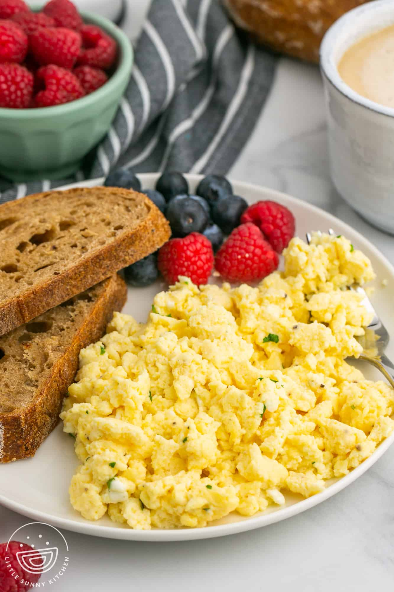

Home
Scrambled Eggs Recipe
Ingredients:
- 4 eggs
- 1/4 cup milk
- 1/4 teaspoon salt
- 1/8 teaspoon black pepper
- 1 tablespoon butter
Instructions:
- Crack the eggs into a bowl.

- Add milk, salt, and black pepper to the bowl.
- Beat the mixture with a fork until well combined.
- Heat a non-stick skillet over medium-low heat and melt the butter.
- Pour the egg mixture into the skillet.
- Gently stir the eggs as they cook to scramble them.
- Cook until the eggs are set but still moist.
- Remove the skillet from the heat.
- Serve the scrambled eggs hot and enjoy!
Serving Suggestion:
- Scrambled eggs go well with toast or bagels.
- For a complete breakfast, serve with some fresh fruits on the side.